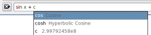
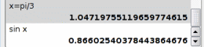

SpeedCrunch


At your fingertip
Unlike traditional desktop calculator, SpeedCrunch is easier to use.
You just type the expression that you want to calculate and press Enter.
You can see clearly what you typed along with the result in the scrollable display.
That is faster and more convenient, isn't it?
You can also paste the expression from the clipboard, that you copied from somewhere else.
And, you can quickly copy the last calculation result to the clipboard using Ctrl+R.
Before you finish, SpeedCrunch may even give already the answer (calc-as-you-type, anyone?).

This allows you to "fix" your expression if you think it is not what you want.
Unlimited variables
Advanced calculation sometimes needs memory feature.
SpeedCrunch allows variables to hold calculation result, e.g. x = 0.3 which can be reused in y = 2*x.
Variables need not only a character, InterestRate is a perfect name as well.
And still, you can define as many variables as you want.
There is a special variable, ans, which always holds the last calculation result.
Another variable pi holds one of the most important constant in math world.
Syntax highlighting
Do you close your parentheses correctly? Mistype the number?
No need to worry again because SpeedCrunch can always color the expression according to the syntax.
syntax highlighting" />
You can easily distinguish numbers from variables.
You can also see the matched parentheses.
Functions, with automatic completion
Beside standard algebraic operator like + (addition), - (subtraction), * (multiplication), / (division), ^ or ** (exponentiation), there is support for some functions, for example sin, log, abs, and many more.
You do not need to memorize function names, use Ctrl+F to pop up a dialog where you can choose the function that you need.
Or take advantage of its auto-completion.
automatic completion" />
Type the letter c only and in less than a second you will be automagically given with choices of cos, cosh or your variables whose name start with c.
50 decimals at your disposal
With its unique calculation routines, you can get up to 50 decimals of precision.
Normally, all the important digits are shown, but you can also ask SpeedCrunch to round it to several digits.
precision"/>
When your calculation is quite complex and involving a chain of operations, this high precision ensures that you would get less rounding error in the end.
History repeats itself
If you want to recall again the expression which you typed before, then press up and down arrow to access the expression history.
Moreover, your expression history (maximum last 100 expressions) is saved between sessions. This means you can still invoke those calculations you have done yesterday or last week.
Smart correction
Often, SpeedCrunch can still understand an incomplete expression.
For example, just typing sin followed by Enter - likely means taking the sine of last value - is automatically translated as sin(ans).
Also, for some functions you may skip the parentheses if you pass simple number or variable, sin 0.1 is as valid as sin(0.1).
Speaking about parentheses, closing them can be left to SpeedCrunch, e.g. cos(pi/4 is automatically corrected to cos(pi/4).
Keyboard-friendly
SpeedCrunch has many keyboard shortcuts to speed up your task:
| shortcut for Previous/Next ExpressionUp/Down | recall last expression |
| shortcut for Insert VariableCtrl+I | insert variable |
| shortcut for Insert FunctionCtrl+F | insert function |
| shortcut for Copy ResultCtrl+R | copy last result to clipboard |
| shortcut for Save SessionCtrl+S | save current session to text file |
| F9 | radians mode for trigonometric functions |
| F10 | degrees mode for trigonometric functions |